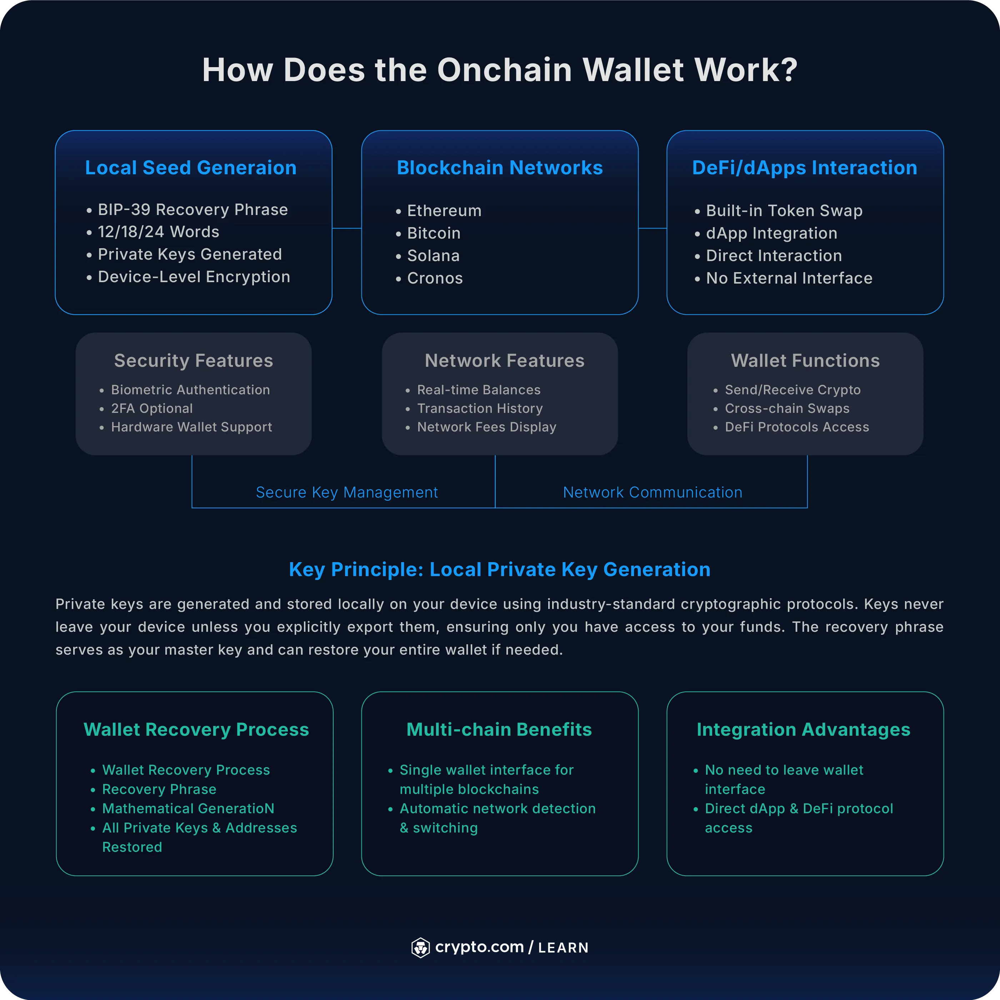
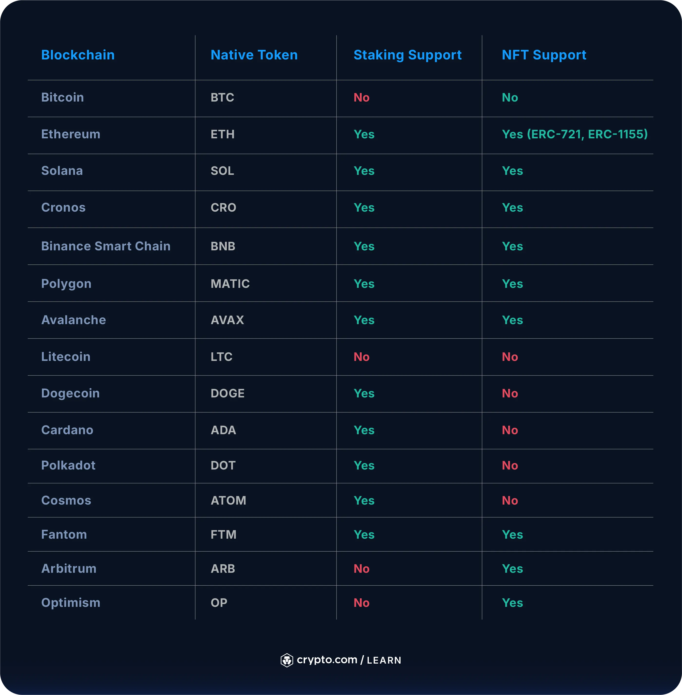

Getting started with Onchain Wallet
Getting to grips with cryptocurrency wallets can feel overwhelming, especially as a beginner when you're deciding between custodial and non-custodial options.
If you're exploring self-custody solutions, Crypto.com's Onchain Wallet (formerly known as the DeFi Wallet) offers a blend of user-friendly design and advanced Web3 functionality. But it’s one of several options and isn’t the right choice for everyone.
In this comprehensive guide, we'll walk you through everything you need to know about our Onchain Wallet, from its core features and security measures to how it stacks up against popular alternatives like MetaMask and Coinbase Wallet.
What is Onchain Wallet?
Crypto.com’s Onchain Wallet is a non-custodial cryptocurrency wallet that puts you in complete control of your digital assets. Unlike traditional exchange wallets where a third party holds your private keys, Onchain Wallet generates and stores your private keys directly on your device, giving you full ownership and control over your cryptocurrencies.
As a multi-chain hot wallet, Onchain Wallet supports interactions across multiple blockchain networks, making it easy to manage diverse crypto portfolios. The wallet functions as both a standalone mobile app and as a browser extension for browsers, providing flexibility for both mobile and desktop users.
But what really sets Onchain Wallet apart as a decentralised wallet is its integration with Web3 decentralised applications (dApps), decentralised exchanges and decentralised finance (DeFi) protocols. This means you can participate in the broader decentralised ecosystem (including token swaps, yield farming and NFT trading) all while maintaining control over your private keys.
The wallet doesn't require a Crypto.com account to function, though having one can unlock additional features like fiat purchasing options.

How does the Onchain Wallet work?
Onchain Wallet works on the principle of local private key generation. When you create a new wallet, it generates your private keys directly on your device using industry standard cryptographic protocols. These keys never leave your device unless you explicitly export them, ensuring that only you have access to your funds.
The wallet uses a BIP-39 recovery phrase (commonly called a seed phrase) consisting of 12, 18 or 24 words that serves as the master key to your cryptocurrency holdings by mathematically generating all your private keys and wallet addresses across different blockchain networks. If you ever lose access to your device, this phrase enables you to restore your entire wallet and regain access to your funds.
Multi-chain functionality is built into the wallet's core architecture. You can seamlessly switch between supported networks including Ethereum, Bitcoin, Solana and Cronos without creating separate wallets, because the interface automatically detects which network you're working on.
Key security features include device level encryption, biometric authentication (such as Face ID), and optional two factor authentication. For users seeking increased security, the wallet supports pairing with hardware wallets like Ledgers, combining the convenience of a hot wallet with the security of cold storage.
When you’re sending or receiving cryptocurrencies, the wallet connects directly to blockchain networks, allowing you to view real time balances, transaction histories and network fees.
Built-in token swap functionality lets you exchange cryptocurrencies without leaving the wallet interface, while dApp integration enables you to easily interact with decentralised applications.
Onchain Wallet benefits
Key advantages of our Onchain Wallet include:
- Full ownership and control – unlike "custodial wallets where exchanges or companies control your private keys, you maintain complete ownership of your cryptocurrency assets. This means no third party can freeze your account, restrict your transactions or lose your funds due to their own security failures.
- Access to DeFi and Web3 ecosystem – it opens up opportunities beyond simple sending and receiving crypto. You can participate in yield farming, provide liquidity to decentralised exchanges, stake tokens for rewards, trade NFTs or interact with thousands of decentralised applications. This level of access is typically impossible with traditional custodial wallets.
- Multi-chain flexibility – eliminates the need for multiple wallet applications. Whether you're trading Ethereum-based tokens, holding Bitcoin or exploring Solana DeFi projects, Onchain Wallet manages assets across all major blockchain networks from a single interface.
- Increased privacy and security – come naturally with non-custodial architecture. Your transaction history and wallet balances aren't stored on centralised servers, reducing the risk of large scale data breaches. Since private keys remain on your device, you're not vulnerable to exchange hacks.
- No account requirements – meaning you can start using Onchain Wallet immediately without providing personal information, undergoing identity verification or creating an account with a centralised service. This aligns with cryptocurrency's core principle of financial sovereignty.

Onchain Wallet Supported Cryptocurrencies
Wallet support depends on the networks and tokens implemented by the particular wallet version. Common blockchain ecosystems can include Bitcoin, Ethereum, Solana and other compatible networks.
Always check the selected network before sending an asset. A token sent through an incompatible network may not arrive as expected and recovery can be difficult or impossible.
Security and safety: Is Onchain Wallet safe?
As with all wallets, there are trade-offs to consider. Onchain Wallet hosts a comprehensive security framework to protect user funds and private keys. However, like all hot wallets, it carries inherent risks:
- Device-level security – Advanced encryption protocols that help to protect your private keys and recovery phrases while stored on your device. The wallet uses secure hardware elements available on modern smartphones and implements biometric authentication (fingerprint or Face ID) alongside traditional PIN protection.
- Two-factor authentication (2FA) – Adds an additional layer of protection for both wallet access and transaction signing. Users can enable 2FA through authenticator apps, which help to protect you from unauthorised access even if your password is compromised.
- Hardware wallet integration – Represents the highest level of security available. Onchain Wallet supports pairing with Ledger hardware devices, allowing you to manage assets through the wallet’s interface while keeping private keys securely stored on dedicated hardware that never connects to the internet.
- Open source transparency and audits – The wallet’s open source components and regular security audits provide users with additional confidence. However, self-custody still means taking full responsibility for following good security practices.
As a hot wallet, Onchain Wallet stores private keys on internet connected devices, making it theoretically more vulnerable to malware compared to hardware only solutions.
Best security practices include keeping your recovery phrase written down and stored offline, using a hardware wallet pairing for significant holdings, enabling all available security features, keeping your device operating system updated and avoiding accessing your wallet on public WiFi networks.
Centralised vs decentralised wallets: What’s the difference?
Understanding the fundamental differences between centralised and decentralised wallets is important for choosing the right storage solution for your cryptocurrency needs.
Centralised (custodial) wallets are managed by third-party companies including exchanges. With these wallets, the company holds and controls your private keys, meaning they technically own your cryptocurrency on your behalf.
Key characteristics of centralised wallets include:
- Company controls private keys and funds
- Account recovery through customer support
- Built-in fiat onramps and easy purchasing
- FDIC insurance available in some jurisdictions
- Simplified user experience with customer support
- Vulnerable to company failures or regulatory actions
Decentralised (non-custodial) wallets like Onchain Wallet give you complete control over your private keys and funds. You're essentially your own bank, with full ownership and responsibility for your cryptocurrency assets.
Key characteristics of decentralised wallets include:
- User controls private keys and funds
- Self-reliant recovery through seed phrases
- Direct blockchain interactions and DeFi access
- No insurance against user errors or loss
- Greater privacy and censorship resistance
- Higher technical responsibility and learning curve
The key trade-off between the two wallet types is convenience versus control. Centralised wallets offer simplicity, customer support and protection against user errors, but require trusting third parties with your funds. Decentralised wallets provide maximum control and privacy but require users to be responsible for their own security.
Crypto.com app vs Onchain Wallet: What’s the difference?
We offer two distinct wallet solutions that serve different user needs and represent different approaches to cryptocurrency management.
Our Crypto.com App (custodial) functions as a traditional centralised exchange and wallet service. We hold your private keys and manage your cryptocurrency on your behalf, similar to how banks manage traditional money. This prioritises simplicity and convenience, making it ideal for users who want straightforward buying, selling and basic cryptocurrency management.
Onchain Wallet (non-custodial) operates as a self-custody solution where you control your private keys and take full responsibility for your funds. This approach prioritises control and access to advanced features like DeFi protocols and dApps.
The Crypto.com App works well for users who want simple cryptocurrency investing, regular buying and selling, and don't mind trusting a company with their funds. Onchain Wallet suits users who want to participate in DeFi, maintain complete control over their assets and don't need extensive customer support.
Many use the App for simple purchases and long-term holdings, and the Onchain Wallet for DeFi activities and self-custody storage. The platforms can work together, with users transferring funds between them based on their immediate needs.
Best use cases for Onchain Wallet
Onchain Wallet has clear advantages over custodial alternatives in specific scenarios:
- <DeFi enthusiasts – represent the primary users of Onchain Wallet. If you want to participate in yield farming, provide liquidity to decentralised exchanges or earn rewards through staking protocols, the wallet’s dApp integration makes these activities seamless. Unlike custodial wallets that limit you to centralised services, Onchain Wallet opens access to thousands of DeFi protocols across multiple blockchain networks.
- Privacy-conscious users – zzbenefit from the wallet’s non-custodial architecture. Your transaction history and balances aren’t stored on centralised servers, reducing exposure to any data breaches or surveillance.
- Multi-chain investors – find significant value in Onchain Wallet’s broad blockchain support. Instead of managing separate wallets for Bitcoin, Ethereum, Solana and other networks, you can consolidate everything into a single platform while still maintaining full control over each asset type.
- Existing Crypto.com ecosystem users – gain additional benefits from the integration between Onchain Wallet and other Crypto.com services. While the wallet works independently, connecting it to your Crypto.com account enables fiat purchasing directly within the wallet.
- Users seeking education – benefit from the hands-on experience of managing private keys, understanding gas fees and interacting directly with blockchain networks. This educational aspect prepares you for more advanced cryptocurrency knowledge.
It’s worth noting that despite the advantages, Onchain Wallet may not be ideal for those who prioritise simplicity over control, require extensive customer support, prefer insured custody solutions or who want to store large amounts without implementing additional security measures such as hardware wallet integration.
Custodial vs non-custodial wallets: What’s the difference?
Custodial wallets operate under the principle that a trusted third party manages your private keys and cryptocurrency on your behalf. This mirrors traditional banking, where financial institutions hold and protect your money while providing services like account recovery, customer support and regulatory compliance.
Non-custodial wallets like Onchain Wallet follow the principle of sovereignty, where you generate, control and are solely responsible for your private keys. This aligns with cryptocurrency's original vision of eliminating intermediaries from financial transactions.
With custodial solutions, the service provider technically owns your cryptocurrency and grants you usage rights through their platform. With non-custodial solutions, you directly own the cryptocurrency through cryptographic proof, with no third party able to restrict your access.
Custodial wallets require trust that the provider will remain solvent, secure and honest, while non-custodial wallets require trust in your own ability to manage security, backup recovery phrases and avoid human errors.
Recovery mechanisms are also different. Custodial wallets typically offer account recovery through customer support, email verification or identity documents. Non-custodial wallets rely entirely on seed phrase recovery, such that if you lose your seed phrase, your funds become permanently inaccessible.
The two also host different risk profiles, with custodial wallets facing risks from company failures, hacking, regulatory seizures and service restrictions, and non-custodial wallets facing risks from user errors, device loss, seed phrase exposure and technical complexity.
The famous saying ‘not your keys, not your crypto’ encapsulates the philosophical difference: custodial solutions prioritise convenience and support, while non-custodial solutions prioritise ownership and control.
How to import or recover your Onchain Wallet
Wallet recovery and import functionality means you can usually access your cryptocurrency assets even if you lose your device or need to reinstall the application. Onchain Wallet supports several methods for restoring wallet access.
Import via recovery phrase
- Download and launch Onchain Wallet on your new device or after reinstalling the application. Choose ‘Import Wallet’ instead of ‘Create New Wallet’ on the welcome screen.
- Select the recovery method by choosing ‘Recovery Phrase’ from the available import options. The wallet will prompt you to enter your BIP-39 seed phrase.
- Enter your seed phrase carefully, including the exact spelling and word order. The wallet typically accepts 12, 18 or 24-word phrases. Use the auto complete suggestions to avoid typos, as incorrect phrases will fail to restore your wallet.
- Set your new device security by creating a new PIN and password or enabling biometric authentication for your restored wallet. This security only protects wallet access on this device as your funds remain secured by the original seed phrase.
- Verify success by checking that your wallet addresses and balances match your expectations. It may take several minutes for the wallet to sync with blockchain networks so don’t panic if the balance takes a while to update.
Import from another wallet
Using MetaMask or a hardware wallet import follows the same recovery phrase process since most wallets use BIP-39 standard seed phrases. Export your seed phrase from your original wallet (MetaMask, Ledger etc) and then simply import it into Onchain Wallet using the steps above.
Private key import is also available for individual addresses, though this method only imports specific addresses rather than your entire wallet. Navigate to wallet settings, choose ‘Import Private Key,’ and enter the private key for the specific address you want to access.
Recovering your wallet after device loss
Immediate security steps should include changing passwords for any associated accounts (like Crypto.com accounts linked to the wallet) and considering whether your seed phrase is potentially compromised if stored on the lost device. For reference, it’s best practice to keep seed phrases offline.
The recovery process is identical to standard import procedures. Install Onchain Wallet on your new device and use your previously backed-up seed phrase to restore complete wallet access. It’s possible to have the same wallet active on multiple devices simultaneously, because your seed phrase generates identical wallet addresses regardless of which device you use.
Recovery phrase and how to back it up
A recovery phrase (also called a seed phrase, mnemonic phrase or backup phrase) is effectively the master key to your entire cryptocurrency wallet. This sequence of 12, 18 or 24 randomly generated words mathematically derives all your private keys and wallet addresses from across the different blockchain networks.
Recovery phrases work through the BIP-39 (Bitcoin Improvement Proposal 39) standard, which creates a readable representation of cryptographic entropy. Each word comes from a predefined list of 2,048 possible words, and the specific combination generates a unique 128-bit, 192-bit or 256-bit seed that creates your private keys.
Its importance can’t be overstated, as your recovery phrase is your wallet. Anyone with access to this phrase can recreate your wallet on any device and control all associated cryptocurrency. Simultaneously, losing your recovery phrase means permanently losing access to your funds, as no company or service can recover non-custodial wallets.
In other words, it’s a good idea to have your recovery phrase backed up.
Backup best practices focus on offline, physical storage methods:
- Write phrases on paper or even metal using permanent ink or engraving. Avoid printers, photocopiers or any digital devices that might store copies.
- Create multiple copies stored in separate, secure locations. Consider fireproof safes, bank safety deposit boxes or trusted family members.
- Verify backup accuracy by testing recovery on a separate device before storing significant amounts. One incorrect word renders the entire phrase useless.
- Use additional security layers like splitting phrases across multiple locations or using hardware wallets that generate and store seeds offline.
Common mistakes include taking photos of seed phrases, storing them in cloud services, sharing them via messaging apps or keeping them in easily accessible digital files. Digital storage compromises the entire purpose of self-custody security, and no digital storage solution can be 100% secure.
Warning signs of wallet compromise include unexpected transactions, balance changes, or any indication that someone else accessed your funds. If you suspect your seed phrase has been stolen, immediately create a new wallet and transfer all assets to the new addresses.
This may feel excessive, but when you use Onchain Wallet, you become responsible for your own crypto security.
Onchain Transfer Request
Need to submit a transfer request? Use the form below.
FAQs about Onchain Wallet
Is Crypto.com Onchain Wallet secure?
Onchain Wallet uses device-level encryption, biometrics and hardware wallet integration. Your private keys stay on your device, not company servers. Like all hot wallets, risks exist from device compromise, but pairing with a hardware wallet and good backup practices increases your safety.
What cryptocurrencies does Onchain Wallet support?
It supports 36 blockchains and 4,000+ tokens, including Bitcoin, Ethereum, Solana, Cronos, Polygon, Litecoin and Dogecoin. New networks are added regularly so check the app for the latest list.
How do I purchase tokens on the Crypto.com Onchain extension?
Connect your Crypto.com account to use Apple Pay, Google Pay, debit/credit cards or bank transfers. You can also swap tokens directly in the extension or transfer from external wallets.
Can I stake using Onchain Wallet?
Yes. You can stake tokens like CRO, ETH, DOT and ATOM through native validators or DeFi protocols in the ‘Earn/Stake’ section (options vary by network).
Can I connect hardware wallets like Ledger?
Yes. Onchain supports Ledger integration, letting you manage your assets while keeping private keys on your Ledger.
Can I use Onchain Wallet without a Crypto.com account?
Yes. You can create wallets, manage assets, swap tokens and use dApps without an account. Linking a Crypto.com account just adds fiat purchase and transfer options.
What happens if I lose my recovery phrase?
You lose access to your funds permanently. No one can recover it for you. Always back up your phrase offline before storing large amounts.
Does the wallet support NFTs and which chains?
Yes. It supports Ethereum (ERC-721/1155), Cronos POS and Cronos Beta NFTs. The wallet includes NFT viewing, organising and sharing features.
Supported assets vary by wallet and network. Check the wallet's current supported networks and token list before depositing or transferring an asset.
A self-custody wallet can generally be used independently of a centralised exchange account. Specific purchase, transfer or third-party features may have their own requirements.
Some wallet applications support hardware-wallet connections. Availability depends on the wallet, device and network being used.
For a self-custody wallet, losing the recovery information can mean losing access permanently. Keep backups offline and never share them.
Compatible wallets can connect to supported decentralised applications. Always review connection and transaction permissions before approving requests.
No. The destination must support the asset and network you are sending. Always verify the address and network before confirming a transaction.
No wallet can eliminate market, transaction, security or operational risks associated with digital assets.